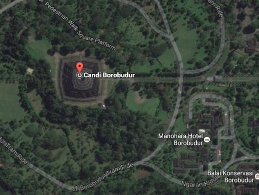
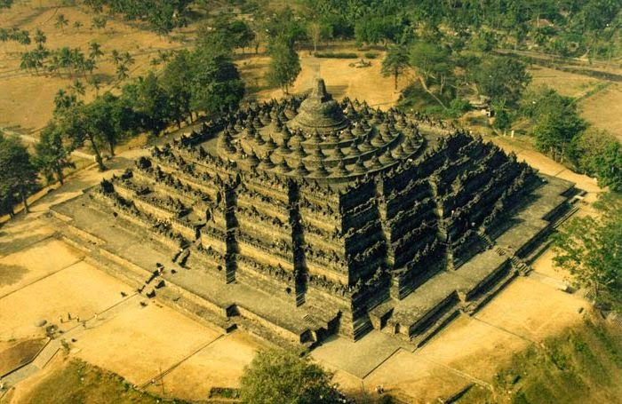

SELAMAT DATANG DI SITUS WEBSITE CANDI BOROBUDUR
Candi Borobudur adalah salah satu Candi terbesar di Indonesia. Candi borobudur adalah salah satu Candi Buddha yang ada di Magelang, provinsi Jawa Tengah. Candi Borobudur ada kurang lebih 40 km di sebelah barat laut kota jogja. Dengan kendaraan umum, mobil serta sepeda motor hanya memakan waktu sekitar 1 jam perjalanan dari kota Jogja. Candi Borobudur di bangun pada masa penganut ajaran Buddha Mahayana tepatnya sekitar tahun 750-800 an Masehi. Candi Borobudur juga masuk dalam 7 keajaiban dunia, selain karena menjadi yang terbesar, Candi Borobudur menjadi Candi Buddha yang tertua sebab di bangun jauh sebelum Candi Angkor Wat di Kamboja yang masih baru dibangun kira-kira pada pertengahan abad ke-12 oleh Raja Suryavarman II.

Lokasi Candi Borobudur sendiri ada di kota Magelang, Jawa Tengah. Untuk alamat pasti dan lengkapnya, Candi Borobudur ada di Jalan Badrawati, Borobudur, Kota Magelang, Jawa Tengah. Lokasi Candi Borobudur sendiri ada di tengah-tengah serta sangat strategis. Candi Borobudur ada sekitar 100 km dari kota Semarang, jarak 86 km dari Surakarta dan berjarak 40 km dari DI. Yogyakarta.

Fakta Unik Borobudur
1. Candi Borobudur dibangun antara abad ke-8
2. Candi Borobudur ditemukan Gubernur Jenderal Inggris
3. Relief di Candi Borobudur bercerita kisah kehidupan Buddha
4. Candi Borobudur sempat mau dibongkar dan disimpan dalam museum
5. candi Borobudur menjadi wisata ziarah umat Buddha
6. candi Borobudur pernah mengalami kerusakan akibat bencana alam
7. Artefak Candi Borobudur tersebar di beberapa museum seluruh dunia
8. Merupakan 7 Keajaiban Dunia
berikut biodata kelompok kami :
Pramudya Dwi Febrianto
200411100042
github : pramdf042
Rama Priyadi
200411100191
github : ramapriyadi
Dhafa Febriyan Wiranata
200411100169
github : davata1
Ikhtiar Hidayatullah
200411100180
github : tiarh